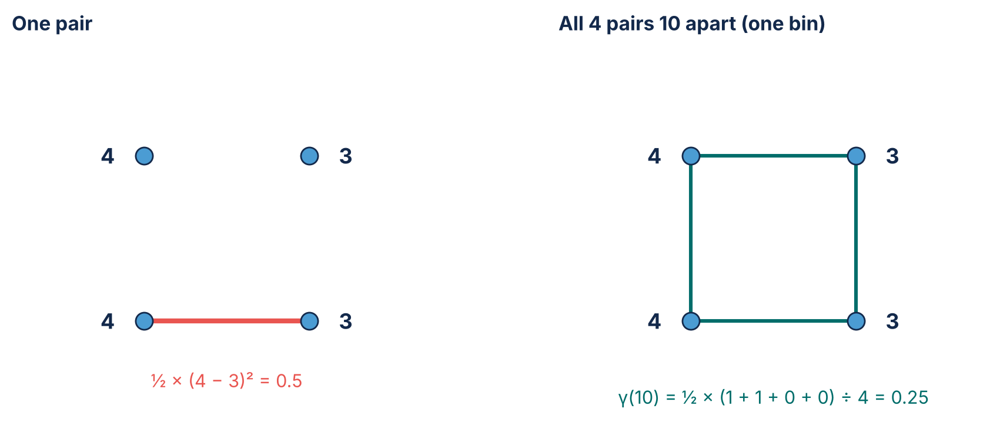
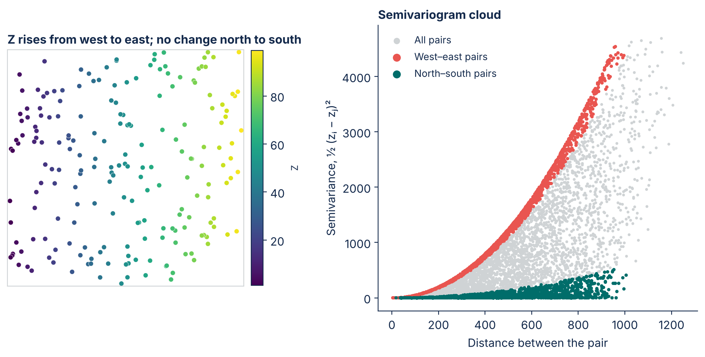
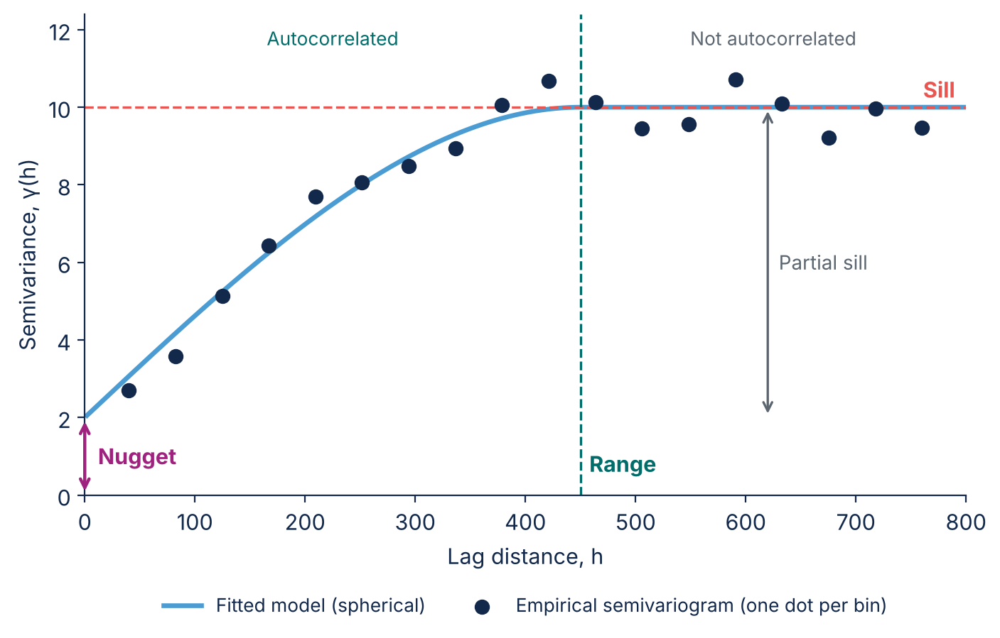
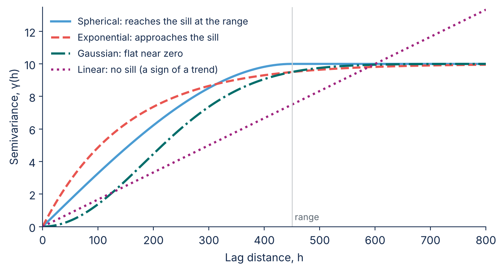
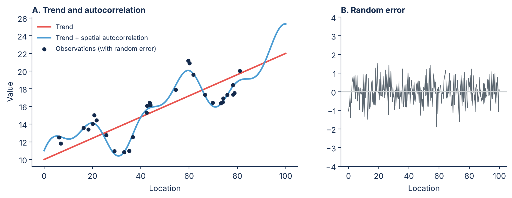
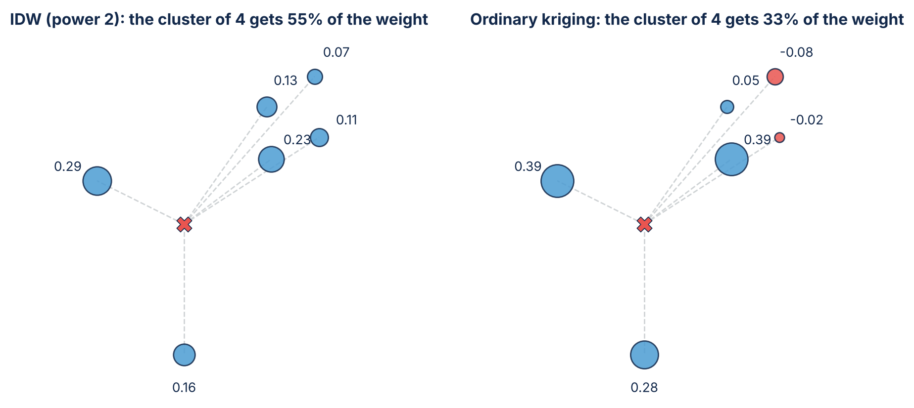
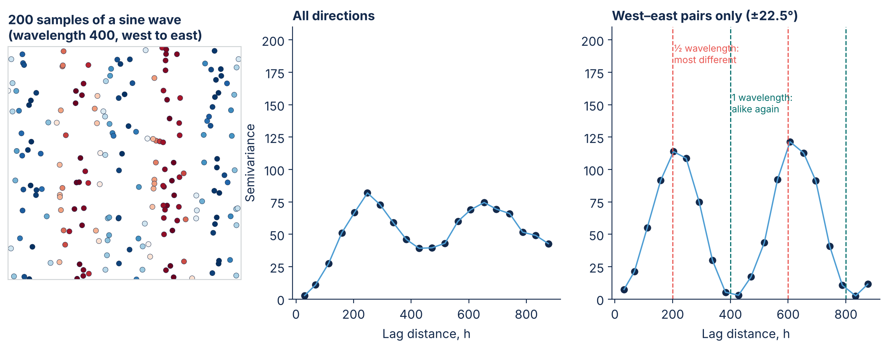
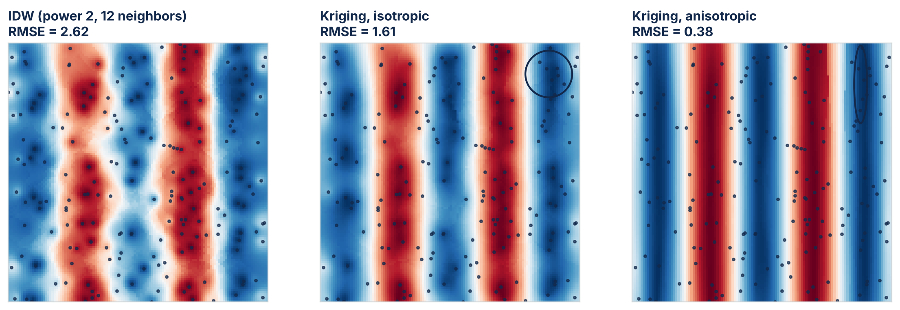
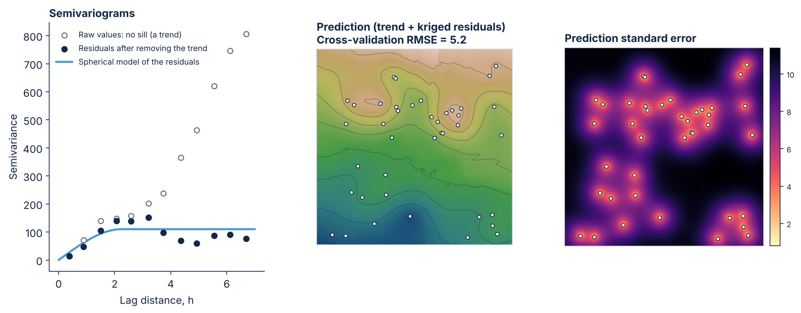

16 Kriging
By the end of this chapter you should be able to:
- Compute semivariance for a pair of observations and for a distance bin.
- Read a semivariogram, and explain its nugget, sill, and range.
- Explain how kriging sets its weights, and how that differs from IDW.
- Recognize anisotropy and trends, and model them.
- Tell ordinary, simple, universal, and cokriging apart.
- Judge a kriged surface with cross-validation statistics and a prediction standard error map.
The interpolation methods in Chapter 15 are deterministic: you choose a formula and its settings, and the surface follows. IDW, for example, weights observations by distance raised to a power you pick, whatever the data look like. Kriging takes a different approach. It first measures how values in your data are related at different distances, then uses that measurement to set the weights. Because it is built on a statistical model, it can also estimate how uncertain each prediction is.
16.1 Semivariance
16.1.1 Measuring dissimilarity with distance
Tobler’s first law says near things are more related than distant things (Tobler 1970). Chapter 12 called that tendency spatial autocorrelation. Semivariance turns it into a number. For two observations \(i\) and \(j\), it is half the squared difference between their values:
\[ \gamma = \tfrac{1}{2} (z_i - z_j)^2 \]
Similar values give low semivariance; different values give high semivariance. If the first law holds, pairs close together should have low semivariance, and pairs far apart high semivariance.
For many pairs, we group them into bins (also called lags) by the distance between them, and average within each bin. The semivariance of a bin \(h\) with \(n\) pairs is:
\[ \gamma(h) = \frac{1}{2n} \sum (z_i - z_j)^2 \]
In Figure 16.1, the pair of values 4 and 3 has a semivariance of ½ × 1² = 0.5. Four pairs are exactly 10 apart, with squared differences of 1, 1, 0, and 0, so \(\gamma(10)\) = ½ × 2 ÷ 4 = 0.25. (The two diagonal pairs, 14.1 apart, belong to another bin.)

16.1.2 Direction matters
Consider a made-up surface where values rise steadily from west to east, from 0 to 100, and don’t change at all from north to south (Figure 16.2). Plotting the semivariance of every pair against its distance gives a semivariogram cloud. West–east pairs have semivariance that grows quickly with distance, because the farther apart they are, the more their values differ. North–south pairs have low semivariance at any distance, because values don’t change in that direction.

So distance alone doesn’t determine semivariance; direction can matter too. We return to this as anisotropy (Section 16.3.3).
16.2 The semivariogram
A semivariogram (often just variogram) summarizes the cloud: it plots the average semivariance of each distance bin against the bin’s average distance. Kriging then fits a smooth mathematical model through those points. Three parameters describe the model (Figure 16.3):
- The sill is the semivariance where the curve levels off. Pairs farther apart than this are as different as two random observations.
- The range is the distance at which the sill is reached. Within the range, observations are autocorrelated; beyond it, they are effectively independent, and distance adds no information.
- The nugget is the semivariance at a distance of (nearly) zero. In theory, two measurements at the same place should be identical, so the nugget should be 0. In practice it reflects measurement error, and variation at scales smaller than the spacing of the samples. The sill minus the nugget is the partial sill.

16.2.1 Semivariogram models
The fitted model must be one of a few allowed shapes, which guarantee that kriging gives sensible answers. Four are common (Figure 16.4):
- Spherical: rises almost linearly and reaches the sill exactly at the range. The most widely used.
- Exponential: rises quickly and approaches the sill gradually.
- Gaussian: flat near the origin, then rises; suits very smooth surfaces.
- Linear: never levels off. A semivariogram with no sill usually signals a trend in the data (Section 16.3.4).

Choose the model whose shape best matches the empirical semivariogram, especially at short distances, which matter most for prediction. Then check the choice with cross validation.
16.3 Kriging
16.3.1 A surface in three parts
Kriging treats each value as the sum of three parts (Figure 16.5):
- A trend: the broad, large-scale change across the study area.
- Spatial autocorrelation: local, distance-related variation around the trend. This is what the semivariogram describes.
- Random error: what’s left, which can’t be predicted from location.

16.3.2 Weights from the semivariogram
Like IDW, kriging predicts a value at location \(s_0\) as a weighted sum of nearby observations:
\[ \hat{Z}(s_0) = \sum \lambda_i \, Z(s_i) \]
The difference is where the weights \(\lambda_i\) come from. IDW sets them from distance and a power you choose. Kriging solves for them, using the fitted semivariogram, so that the predictions are unbiased and have the smallest possible error variance. In ordinary kriging, the weights sum to 1.
Because kriging accounts for how the observations relate to each other, not only to the prediction location, a cluster of nearby observations shares weight instead of each counting fully (Figure 16.6). Four clustered observations tell us little more than one of them would. IDW gives the cluster more than half the weight; kriging gives it a third, and gives more to the isolated observations that bring new information. Kriging weights can even be slightly negative, for observations “screened” behind others.

Kriging also gives a prediction standard error at every location: an estimate of how far off the prediction might be. It is smallest near observations, and largest where they are sparse (Figure 16.9, right). No deterministic method offers this.
16.3.3 Anisotropy
A surface is isotropic when spatial dependence is the same in every direction, and anisotropic when it changes with direction. Consider a made-up surface that varies in a sine wave from west to east, with a wavelength of 400, and doesn’t change from north to south (Figure 16.7). A semivariogram that pools every direction blurs the pattern. One that uses only west–east pairs shows it clearly: pairs half a wavelength apart (200, 600) are most different, and pairs a full wavelength apart (400, 800) are alike again.

An anisotropic model fits a longer range in one direction (the major range) and a shorter one in the perpendicular direction (the minor range). Its search neighborhood becomes an ellipse stretched along the direction where values stay similar. On the sine surface, the cross-validation RMSE falls from 2.62 for IDW to 1.61 for isotropic kriging, and to 0.38 for anisotropic kriging, which keeps the bands continuous (Figure 16.8).

Name a variable that you would expect to be anisotropic. Which direction would have the longer range? (Think of a river valley, a mountain front, the prevailing wind, or a coastline.)
16.3.4 Trends
Kriging assumes that the mean is stable across the study area. When the data have a strong trend, such as temperature falling steadily from south to north, the semivariogram keeps rising without a sill, like the linear model in Figure 16.4. The fix is to remove the trend first: fit a trend surface (Chapter 15), krige the residuals (observed minus trend), and add the trend back to the predictions.
Figure 16.9 does this for the 40 made-up samples from Chapter 15. The raw semivariogram has no sill; after a first-order trend is removed, the residuals’ semivariogram levels off and fits a spherical model. The kriged surface has a cross-validation RMSE of 5.2, better than IDW (8.2) but not as good as the radial basis function (4.2) on this surface. Kriging is not guaranteed to win. Its standard error map shows where the prediction is least certain: the corners and the empty lower right.

16.3.5 Types of kriging
The main types differ in how they treat the trend:
| Type | The trend (mean) is | Use when |
|---|---|---|
| Ordinary kriging | An unknown constant | The most common choice; no strong trend |
| Simple kriging | A known constant | The mean is known, for example from a long record |
| Universal kriging | A function of location, such as a polynomial | There is a clear trend, such as a west–east gradient |
| Cokriging | Any of the above, plus a correlated secondary variable | A second, densely sampled variable helps, such as elevation for temperature |
Universal kriging is the version of Figure 16.9: the trend is modeled as a polynomial and the residuals are kriged. It suits variables like U.S. precipitation, which changes steadily from the dry West to the wet Southeast.
16.4 Judging the result
16.4.1 Cross-validation statistics
As in Chapter 15, cross validation removes each observation in turn, predicts it from the rest, and compares. Because kriging also predicts its own standard errors, it adds two statistics that test whether its uncertainty is realistic (Table 16.2). ArcGIS Pro’s Geostatistical Wizard reports all four.
| Statistic | Target | What it tells you |
|---|---|---|
| Mean error | Close to 0 | Predictions are unbiased |
| Root mean square error (RMSE) | As small as possible | How close predictions are to the observed values |
| Average standard error | Close to the RMSE | Whether the model’s uncertainty is realistic |
| Root mean square standardized error | Close to 1 | Above 1: uncertainty is underestimated; below 1: overestimated |
16.4.2 The kriging workflow
Putting it together, a typical kriging analysis, as in ArcGIS Pro’s Geostatistical Wizard:
- Explore the data. Map it; check the histogram; look for outliers and trends.
- Remove any trend, and choose the type of kriging.
- Compute the semivariogram, in several directions to check for anisotropy.
- Fit a model: choose its shape, and set the nugget, sill, and range (and major and minor ranges, if anisotropic).
- Set the search neighborhood: the number of neighbors, sectors, and shape.
- Cross-validate, and compare the statistics with other models and methods.
- Map the prediction and its standard error.
Use cross-validation statistics, not appearance, to choose among models and methods. Every surface looks plausible.
16.5 Kriging in ArcGIS Pro and QGIS
- ArcGIS Pro. The Geostatistical Wizard (Geostatistical Analyst extension) runs ordinary, simple, universal, and cokriging, with full control of the semivariogram, anisotropy, trend removal, and search neighborhood, and reports cross-validation statistics. Empirical Bayesian Kriging automates semivariogram fitting by simulating many semivariograms. The Spatial Analyst Kriging tool offers a simpler interface.
- QGIS. The Processing Toolbox includes SAGA’s kriging tools (ordinary and universal kriging) and GRASS’s v.surf.rst for splines. The Smart-Map plugin provides kriging with semivariogram fitting and cross validation.
16.6 Check your understanding
What is the semivariance of a pair of observations with values 7 and 3?
The distance at which a semivariogram levels off is the:
Semivariance at (nearly) zero distance, from measurement error or small-scale variation, is the:
A semivariogram that rises without ever leveling off suggests:
Compared with IDW, kriging gives a cluster of nearby observations:
Spatial dependence that changes with direction is:
Which type of kriging models the trend as a function of location?
A root mean square standardized error well above 1 means the model underestimates its uncertainty.
16.7 Summary
- Semivariance is half the squared difference between two values. Averaged by distance bin, it shows how dissimilarity grows with distance.
- A semivariogram plots semivariance against distance. Its nugget, sill, and range describe spatial dependence. Models include spherical, exponential, Gaussian, and linear.
- Kriging predicts a weighted sum of observations, with weights solved from the fitted semivariogram so predictions are unbiased with minimum error variance. Clustered observations share weight, and every prediction has a standard error.
- Anisotropy (dependence that changes with direction) is modeled with major and minor ranges and an elliptical search. Trends are removed before modeling, and added back.
- Ordinary, simple, universal, and cokriging differ in how they treat the trend, and whether they use a secondary variable.
- Judge a kriged surface with cross validation: mean error near 0, small RMSE, average standard error near the RMSE, and RMS standardized error near 1.
16.8 Exercises
- Semivariance by hand. Five wells along a road, 100 m apart, have water-table depths of 12, 14, 13, 17, and 18 m. Compute \(\gamma(100)\) and \(\gamma(200)\).
- Read a semivariogram. For the semivariogram in Figure 16.3, estimate the nugget, sill, partial sill, and range. Beyond what distance would you stop using observations to predict a location?
- Kriging vs. IDW. Using a month of North Carolina rainfall totals from NOAA’s Climate Data Online, interpolate with IDW and ordinary kriging in ArcGIS Pro’s Geostatistical Wizard. Compare the cross-validation statistics. Which method wins?
- Trend. Interpolate average annual temperature for the lower 48 states with ordinary kriging and with universal kriging (first-order trend). Compare the semivariograms. Which levels off?
- Standard error. Map the prediction standard error from Exercise 3. Where would you add new rain gauges, and why?
16.9 Further reading and online resources
16.9.1 Books and papers
- GIS Fundamentals, by Paul Bolstad (Bolstad 2022). The chapter on spatial estimation introduces the semivariogram and kriging.
- Geographic Information Analysis, by David O’Sullivan and David Unwin (O’Sullivan and Unwin 2010), explains semivariograms and kriging clearly, with worked examples.
- An Introduction to Applied Geostatistics, by Edward Isaaks and R. Mohan Srivastava (Oxford University Press, 1989), a classic, readable introduction.
- Krige’s original paper (Krige 1951) and Matheron’s “Principles of Geostatistics” (Matheron 1963).
- Intro to GIS and Spatial Analysis, by Manuel Gimond, free online, includes kriging in its chapter on spatial interpolation: https://mgimond.github.io/Spatial/spatial-interpolation.html.
16.9.2 ArcGIS Pro
- Esri, “How Kriging works”: https://pro.arcgis.com/en/pro-app/latest/tool-reference/3d-analyst/how-kriging-works.htm.
- Esri, “Understanding a semivariogram: The range, sill, and nugget”: https://pro.arcgis.com/en/pro-app/latest/help/analysis/geostatistical-analyst/understanding-a-semivariogram-the-range-sill-and-nugget.htm.
- Esri, “What is Empirical Bayesian Kriging?”: https://pro.arcgis.com/en/pro-app/latest/help/analysis/geostatistical-analyst/what-is-empirical-bayesian-kriging-.htm.
- Esri, “Performing cross validation and validation”: https://pro.arcgis.com/en/pro-app/latest/help/analysis/geostatistical-analyst/performing-cross-validation-and-validation.htm.
- Esri, “Kriging in Geostatistical Analyst”: https://pro.arcgis.com/en/pro-app/latest/help/analysis/geostatistical-analyst/kriging-in-geostatistical-analyst.htm.
16.9.3 QGIS and other tools
- Smart-Map QGIS plugin: https://plugins.qgis.org/plugins/Smart_Map/.
- The GIS&T Body of Knowledge, “Kriging Interpolation” and “Semivariograms”: https://www.ucgis.org/site/gis-t-body-of-knowledge.